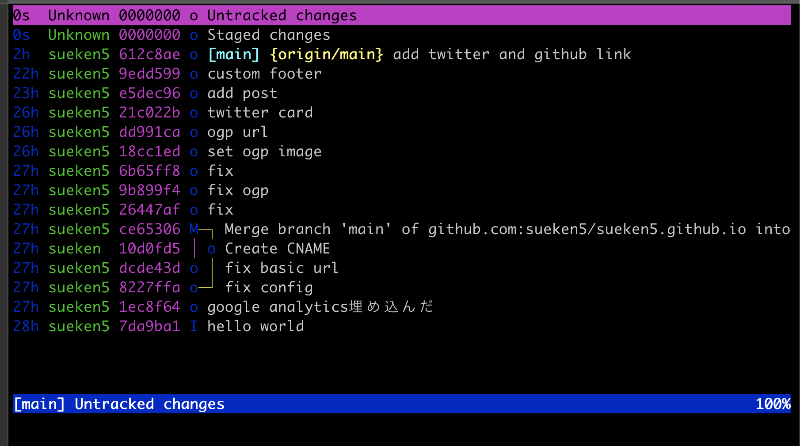
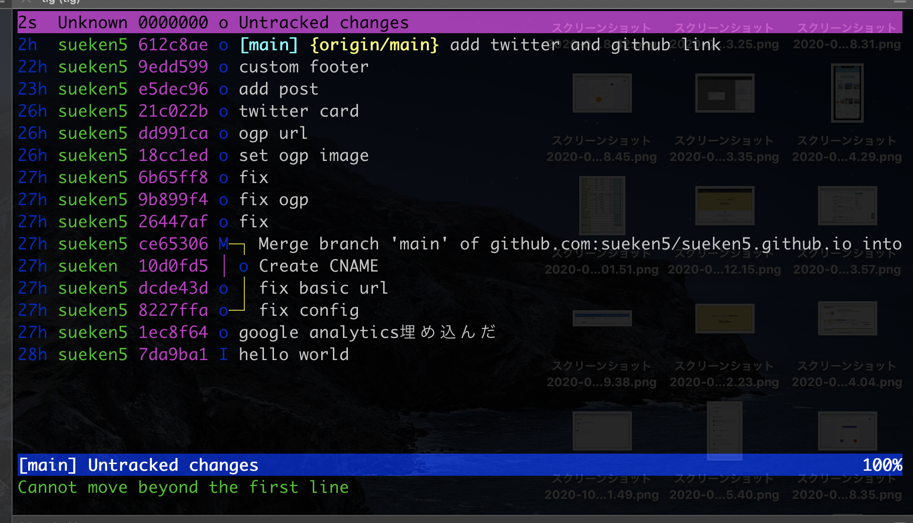
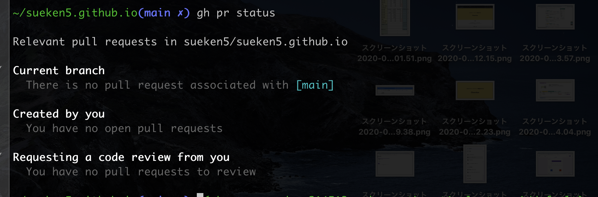

Written by
on
on
tig/ghを使って効率的にPullRequestを送ろう

やりたいこと
github.comにアクセスしないでローカルからPullRequestを作成できるようにします。
tl;dr
~/.gitconfigに追記
[push]
default = current
~/.tigrcに追記
bind status R >gh pr create
bind status V >gh pr view
tig status viewでshift + rでPullRequest作成
tig
tigの詳しい説明は次の記事を参考にしてください。
簡単に説明するとgitをよりビジュアル面や操作面で強化したツールになります。

gh
ghはgithubがossで公開しているcliツールです。ターミナルからgithubにPullRequestを送ったりすることができます。
詳しい説明は次の記事を参考にしていください。
GitHubを操作するCLI「gh – The GitHub CLI tool」(Beta)を試す

PullRequestを送れるようにする。
実際にPullRequestを送れるように設定していきます。
まず~/.gitconfigを修正します。次を追記します。
[push]
default = current
これを追記するとgit push origin {作業ブランチ名}と入力してgithubにpushしていたところを
git pushのみで現在の作業ブランチをpushすることができます。
具体的にいうと次のようになります。
git checkout -b feature
git add .
git commit
git push //featureブランチが指定される
次にtigを設定します。~/.tigrcに次のものを追記します。
bind status R >gh pr create
bind status V >gh pr view
この意味としてはstatus view(main viewでshit+sして遷移する画面)ではshift + rを
入力するとgh pr createしますよ。という設定です。
動作

まとめ
ブラウザまで行かずにpr作れるので効率的で良い感じです。